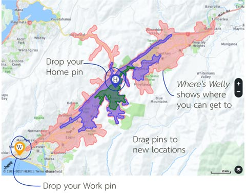

What’s this tool for?
Where’s Welly is a tool for understanding where in the Well you are. Wellington is famous for its hills. What is less famous is the impact those hills have on how long it takes to get from one place to another. Where’s Welly answers that question. Using the tool you can pick a spot on the map and see everywhere you can get to within 15 minutes. You can filter by mode of transport, time of day, day of the week. We also provide a layer of resources which you can switch on/off to see what destinations you can reach.
Pick a starting point, see where you can go
To use the map, click once to drop a (H) pin for home and a (W) pin for work.  If you want, drag either pin to a new location. Look up the graph to see how much time different ways of getting around will take.
How expensive is that?
You can show average rents for areas, so you can see where might be a good deal for you.
Future Work?
Time of day, day of week.
Travel times vary a lot depending on time of day, and buses may not run at the times of day or days of the week that you want to travel.
Other ways of getting around
Ferries, (foot) scooters, running...
Destinations, services
Drawing on here and data.govt.nz data, you can show different categories of destinations and services you might like to use.
Layering, more than two points
Calculating multiple destination/origin points. “Is this house within 20 mins of Work, School, Pool?”
TradeMe plugin
A TradeMe plugin.
Inverse problem: isolated areas
Select a series of destinations (health support services, parks and rec, theatres, supermarket) - where is short on services?